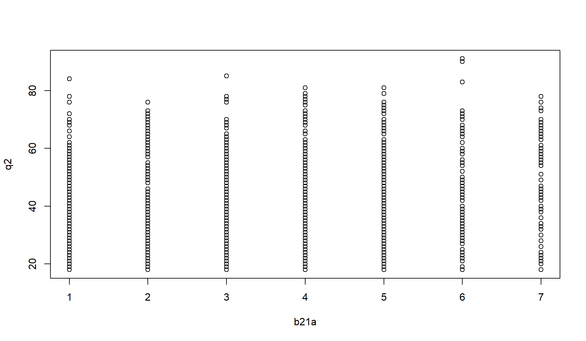
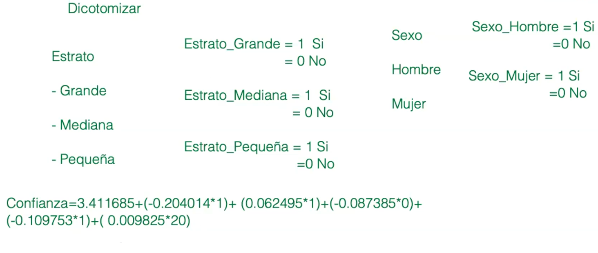
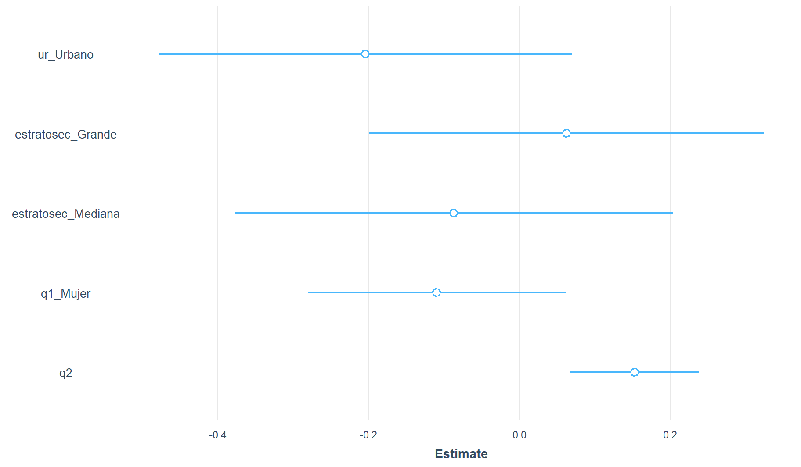
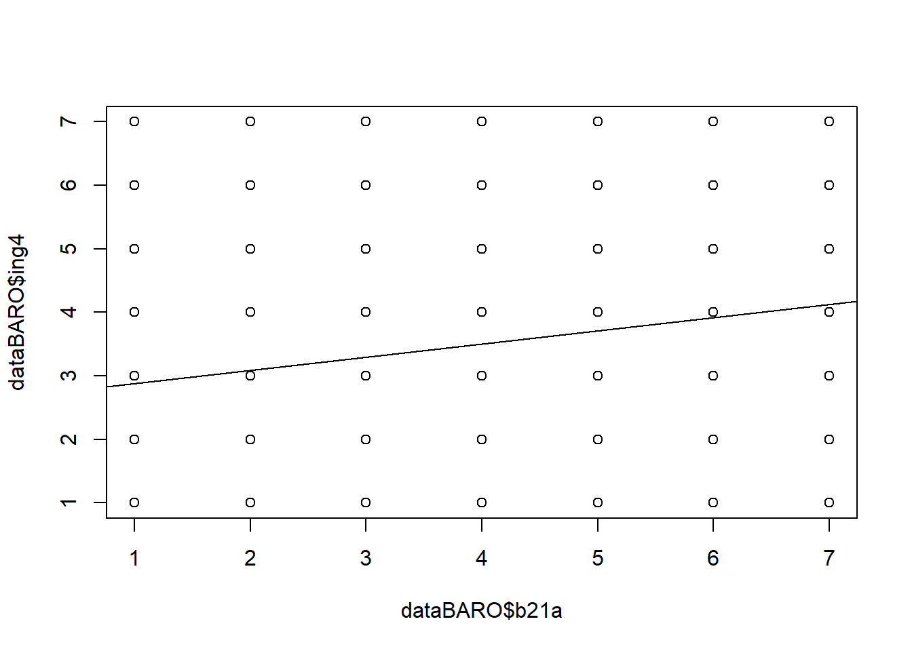
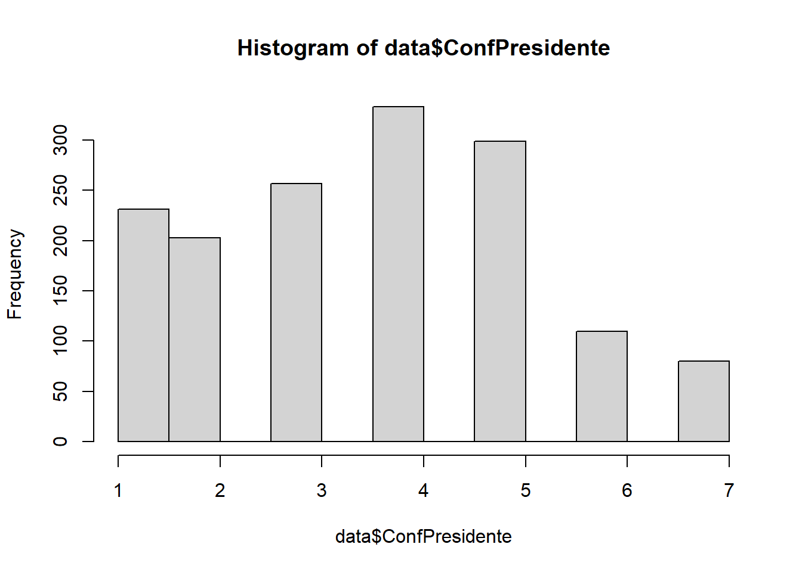
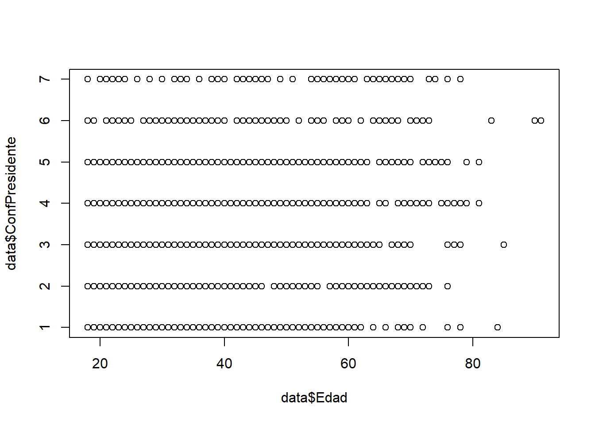
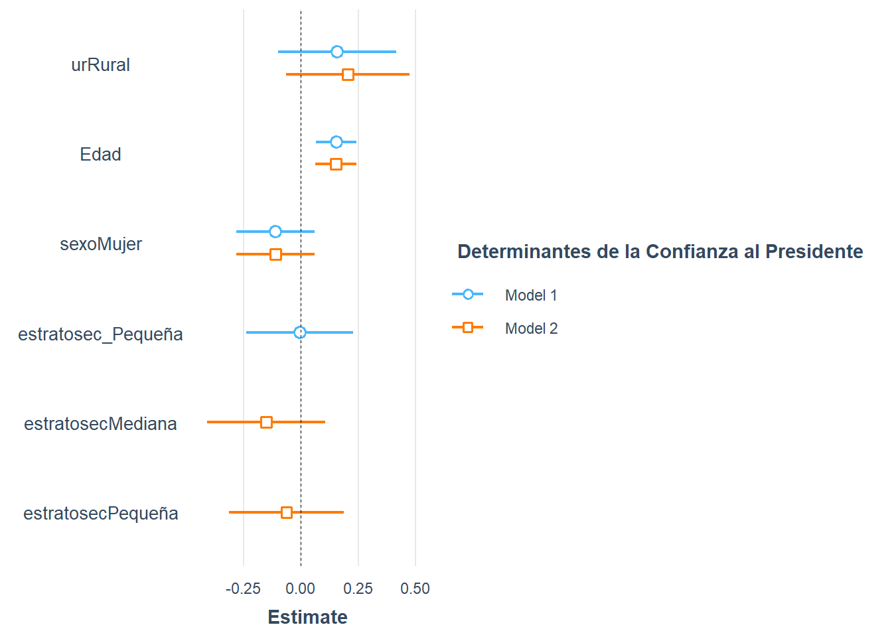

#getwd()
#setwd("")
library(rio)
dataBARO = import("./data/s15/Peru-LAPOP-2019.dta")15 REPASO FINAL I
Descargue la base de datos LAPOPPERU2019.dta que corresponde a las respuestas de peruanos y residentes al cuestionario de LAPOP 2019. Descargue el cuestionario.
Consideraciones: El archivo esta en formato stata. (.dta) Verifique las hipótesis formuladas usando las pruebas estadísticas correspondientes. Tenga en cuenta el tipo de variables para utilizar cada prueba. Interprete.
Un investigador desea analizar la satisfacción con el presidente y la confianza al presidente en Perú antes de la crisis por la pandemia del Covid-19. Para ello, busca variables que estén relacionadas:
1• Una hipótesis es que la confianza al presidente (B21A) está vinculada a la edad. Corroboré esta hipótesis.
2• El investigador formula un primer modelo de regresión para verificar qué variables están relacionadas con la confianza al presidente (B21A). El investigador utiliza las variables sociodemográficas como: Rural o Urbano (UR), Tamaño de la ciudad (ESTRATOSEC), Género (Hombre y Mujer) y Edad. El investigador considera que estas variables sociodemográficas tienen un efecto sobre la confianza al presidente.
3• Un segundo modelo que se plantea es el efecto que tiene el apoyo a la democracia (ING4) en la confianza al presidente (B21A).
4• Elabore un tercer modelo que explique la confianza al presidente (B12A). Consideraciones: El archivo esta en formato stata. (.dta) Verifique las hipótesis formuladas usando las pruebas estadísticas correspondientes. Tenga en cuenta el tipo de variables para utilizar cada prueba. Interprete.
#names(dataBARO)
#str(dataPAVI)16 1• Una hipótesis es que la confianza al presidente (B21A) está vinculada a la edad (q2). Corroboré esta hipótesis.
VD -> confianza al presidente (B21A) - Y VI -> la edad (q2) - X
H0: No existe correlacion entrer la variables confianza al presidente (B21A) y la edad (q2).
H1:#Como la base de datos es grande, no es necesario aplicar la prueba de normalidad. TLC -> más de 121 de casos. Por tanto, por defecto con Pearson.
cor.test(dataBARO$b21a, dataBARO$q2) #Pearson
Pearson's product-moment correlation
data: dataBARO$b21a and dataBARO$q2
t = 3.5927, df = 1510, p-value = 0.0003378
alternative hypothesis: true correlation is not equal to 0
95 percent confidence interval:
0.04184437 0.14181627
sample estimates:
cor
0.09206231 #cor.test(data$b21a, data$q2, method = "spearman")Debido a que el p-value (0.0003378) es menor a 0.05, rechazamos la H0 y, por tanto, aceptamos la H1 de que “sí existe correlación entre confianza al presidente (B21A) y la edad (q2)”.
El Coeficiente de Pearson (RHO) es de 0.09 (9%) quiere decir: - Se trata de una “correlación positiva”; es decir, relación directa (a medida de que la edad aumenta, la confianza al presidente aumenta). No obstante el nivel de fuerza de la relación es muy débil. - Se trata de una “correlación no es relevante”. En efecto, según el criterio de Cohen, la correlación se encuentra en el rango entre 0.0 y 0.1.
Graficamos:
plot(dataBARO$b21a,dataBARO$q2, xlab="b21a", ylab="q2")
INTERPRETACIÓN:
No se aprecia la dirección. no nos da un diagonal perfecta.
- AHORA REGRESIÓN LINEAL SIMPLE DE ESTAS VARIABLES:
modelo1 <- lm(b21a ~ q2, data = dataBARO)
summary(modelo1)
Call:
lm(formula = b21a ~ q2, data = dataBARO)
Residuals:
Min 1Q Median 3Q Max
-3.0590 -1.4746 0.2936 1.3541 3.6060
Coefficients:
Estimate Std. Error t value Pr(>|t|)
(Intercept) 3.212687 0.117258 27.398 < 2e-16 ***
q2 0.010075 0.002804 3.593 0.000338 ***
---
Signif. codes: 0 '***' 0.001 '**' 0.01 '*' 0.05 '.' 0.1 ' ' 1
Residual standard error: 1.693 on 1510 degrees of freedom
(9 observations deleted due to missingness)
Multiple R-squared: 0.008475, Adjusted R-squared: 0.007819
F-statistic: 12.91 on 1 and 1510 DF, p-value: 0.0003378Nos fijamos en el Multiple R-squared: 0.008475 (ya que solo tenemos una variable independiente)
Al revisar el p-value (0.0003378), el cual es menor a 0.05), se determina que el modelo1 es válido para predecir la variable dependiente (confianza al presidente) a partir de la variable (edad). Es decir, la edad sí influye en la confianza al presidente.
El modelo ayuda a predecir el 0.08% de la variabilidad de la variable independiente confianza al presidente.
4 y 5. Coeficientes: Y = a + bx El salario actual de un trabajador va a ser igual a 3.212687 + 0.010075*(educ). En ese sentido, por cada año adicional de edad, la confianza al presidente se incrementa en 3.212687 puntos.
2• El investigador formula un primer modelo de regresión para verificar qué variables están relacionadas con la confianza al presidente (B21A). El investigador utiliza las variables sociodemográficas como: Rural o Urbano (UR), Tamaño de la ciudad (ESTRATOSEC), Género (Hombre y Mujer) y Edad. El investigador considera que estas variables sociodemográficas tienen un efecto sobre la confianza al presidente.#Formateando - Rural o Urbano (UR)
::: {.cell}
```{.r .cell-code}
str(dataBARO$ur)
```
::: {.cell-output .cell-output-stdout}
```
num [1:1521] 1 1 1 1 1 1 1 1 1 1 ...
- attr(*, "label")= chr "Urbano/Rural"
- attr(*, "format.stata")= chr "%36.0g"
- attr(*, "labels")= Named num [1:2] 1 2
..- attr(*, "names")= chr [1:2] "Urbano" "Rural"
```
:::
:::dataBARO$ur <- as.factor(dataBARO$ur)
dataBARO$ur <- factor(dataBARO$ur, levels = levels(dataBARO$ur), labels = c("Urbano", "Rural"))
str(dataBARO$ur) Factor w/ 2 levels "Urbano","Rural": 1 1 1 1 1 1 1 1 1 1 ...table(dataBARO$ur)
Urbano Rural
1165 356 - Tamaño de la ciudad (estratosec)str(dataBARO$estratosec) num [1:1521] 1 1 1 1 1 1 1 1 1 1 ...
- attr(*, "label")= chr "Estrato Secundario"
- attr(*, "format.stata")= chr "%36.0g"
- attr(*, "labels")= Named num [1:3] 1 2 3
..- attr(*, "names")= chr [1:3] "Grande (más de 100,000)" "Mediana (entre 25,000 y 100,000)" "Pequeña (menos de 25,000)"dataBARO$estratosec <- as.factor(dataBARO$estratosec)
dataBARO$estratosec <- factor(dataBARO$estratosec, levels = levels(dataBARO$estratosec), labels = c("Grande", "Mediana", "Pequeña"), ordered=T)
str(dataBARO$estratosec) Ord.factor w/ 3 levels "Grande"<"Mediana"<..: 1 1 1 1 1 1 1 1 1 1 ...table(dataBARO$estratosec)
Grande Mediana Pequeña
845 223 453 - Sexo (q1)str(dataBARO$q1) num [1:1521] 2 1 1 1 2 2 2 1 2 1 ...
- attr(*, "label")= chr "Sexo"
- attr(*, "format.stata")= chr "%36.0g"
- attr(*, "labels")= Named num [1:2] 1 2
..- attr(*, "names")= chr [1:2] "Hombre" "Mujer"dataBARO$q1 <- as.factor(dataBARO$q1)
dataBARO$q1 <- factor(dataBARO$q1, levels = levels(dataBARO$q1), labels = c("Hombre", "Mujer"))
str(dataBARO$q1) Factor w/ 2 levels "Hombre","Mujer": 2 1 1 1 2 2 2 1 2 1 ...table(dataBARO$q1)
Hombre Mujer
758 762 - AHORA PROCEDEMOS CON EL MODELO DE REGRESIÓN LINEAL (MODELO SIN HACER FASTDUMMIES)modelo2 <- lm(b21a~ ur + estratosec + q1 + q2, data = dataBARO)
summary(modelo2)
Call:
lm(formula = b21a ~ ur + estratosec + q1 + q2, data = dataBARO)
Residuals:
Min 1Q Median 3Q Max
-3.2370 -1.4453 0.2649 1.3704 3.6947
Coefficients:
Estimate Std. Error t value Pr(>|t|)
(Intercept) 3.199374 0.134676 23.756 < 2e-16 ***
urRural 0.204014 0.139327 1.464 0.143327
estratosec.L -0.044191 0.094435 -0.468 0.639890
estratosec.Q 0.096863 0.101656 0.953 0.340818
q1Mujer -0.109753 0.087109 -1.260 0.207883
q2 0.009825 0.002807 3.501 0.000477 ***
---
Signif. codes: 0 '***' 0.001 '**' 0.01 '*' 0.05 '.' 0.1 ' ' 1
Residual standard error: 1.693 on 1506 degrees of freedom
(9 observations deleted due to missingness)
Multiple R-squared: 0.01182, Adjusted R-squared: 0.00854
F-statistic: 3.603 on 5 and 1506 DF, p-value: 0.00304Usaremos este modelo pero… - Dicotomizando las variables independientes: NOTA: DICOTOMIZAR SIRVE PARA CREAR LA VARIABLE DE REFERENCIA/CONTROL, TAMBIEN PARA REEMPLAZAR EN LA ECUICACION DE ACUERDO A (SÍ: 1 ; NO: 0). ADEMÁS, PARA AGRUPAR Y TRATAR MEJOR A LAS VARIABLES

library(fastDummies)
dataBARO = dummy_cols(dataBARO, select_columns = c("estratosec", "ur", "q1"))VERIFICANDO LAS NUEVAS VARIABLES CREADAS:names(dataBARO) [1] "idnum" "uniq_id" "cluster"
[4] "upm" "wt" "wave"
[7] "pais" "nationality" "estratopri"
[10] "prov" "municipio" "estratosec"
[13] "tamano" "ur" "fecha"
[16] "q1" "q2" "a4"
[19] "soct2" "idio2" "np1"
[22] "sgl1" "cp6" "cp7"
[25] "cp8" "cp13" "it1"
[28] "l1" "prot3" "jc10"
[31] "jc13" "jc15a" "jc16a"
[34] "vic1ext" "vicbar7" "arm2"
[37] "vic73" "vic41" "vicbar4a"
[40] "percap1" "percap2" "percap3"
[43] "percap4" "aoj11" "aoj12"
[46] "aoj22" "b0" "b1"
[49] "b2" "b3" "b4"
[52] "b6" "b10a" "b12"
[55] "b13" "b18" "b21"
[58] "b21a" "b31" "b32"
[61] "b37" "b47a" "m1"
[64] "sd2new2" "sd3new2" "sd6new2"
[67] "infrax" "ros4" "redist1"
[70] "redist2a" "redist3" "redist_questions_order"
[73] "ing4" "eff1" "eff2"
[76] "eff10" "eff11" "dst1b"
[79] "drk1" "env1" "env1calt"
[82] "env2b" "envp3l" "envp3n"
[85] "envp41" "envp42" "pn4"
[88] "dem30" "e5" "d1"
[91] "d2" "d3" "d4"
[94] "d5" "d6" "lib1"
[97] "lib2c" "exc2" "exc6"
[100] "exc11" "exc13" "exc14"
[103] "exc15" "exc16" "exc18"
[106] "exc7" "exc7new" "immig1xa"
[109] "immig1xb" "immig1xc" "comcon3xa"
[112] "comcon3xb" "comcon3xc" "perven1"
[115] "perven2" "perven3" "perven4"
[118] "perven5" "vb2" "vb3n"
[121] "vb10" "vb11" "pol1"
[124] "vb20" "clien4a" "clien1n"
[127] "clien1na" "clien4b" "vb50"
[130] "vb51" "vb52" "vb58"
[133] "w14a" "mil10a" "mil10e"
[136] "ie1n" "ie2" "wf1"
[139] "cct1b" "ed" "q3cn"
[142] "q5a" "q5b" "ocup4a"
[145] "ocupoit" "ocup1a" "formal"
[148] "q10new" "q14" "q10e"
[151] "q11n" "q12c" "q12bn"
[154] "etid" "gi0n" "gi1"
[157] "gi4" "gi7" "smedia1"
[160] "smedia2" "smedia3" "smedia4"
[163] "smedia5" "smedia6" "smedia7"
[166] "smedia8" "smedia9" "r3"
[169] "r4" "r4a" "r5"
[172] "r6" "r7" "r8"
[175] "r12" "r14" "r15"
[178] "r18" "r1" "r16"
[181] "psc1" "psc2" "psc7"
[184] "psc8" "psc9" "psc10"
[187] "psc11" "psc11a" "psc12"
[190] "psc13_1" "psc13_2" "psc13_3"
[193] "psc13_4" "psc13_5" "psc13_6"
[196] "psc13_7" "psc13_8" "psc13_9"
[199] "psc13_10" "psc13_11" "psc13_12"
[202] "psc13_13" "psc3_0" "psc3_1"
[205] "psc3_2" "psc3_3" "psc4"
[208] "psc5" "psc6" "inteval"
[211] "noise1" "noise2_1" "noise2_2"
[214] "noise2_3" "noise2_4" "noise2_5"
[217] "noise2_6" "noise2_7" "noise2_8"
[220] "noise2_9" "noise2_10" "conocim"
[223] "sex" "formatq" "colorr"
[226] "sexi" "colori" "intid"
[229] "idiomaq" "estratosec_Grande" "estratosec_Mediana"
[232] "estratosec_Pequeña" "ur_Urbano" "ur_Rural"
[235] "q1_Hombre" "q1_Mujer" "q1_NA" - utilizaremos las variables de interes A LA VARIABLE DE REFERENCIA NO SE COLOCA EN EL CODIGO.
modelo3 <- lm(b21a ~ ur_Urbano + estratosec_Grande + estratosec_Mediana + q1_Mujer + q2, data = dataBARO)
summary(modelo3)
Call:
lm(formula = b21a ~ ur_Urbano + estratosec_Grande + estratosec_Mediana +
q1_Mujer + q2, data = dataBARO)
Residuals:
Min 1Q Median 3Q Max
-3.2370 -1.4453 0.2649 1.3704 3.6947
Coefficients:
Estimate Std. Error t value Pr(>|t|)
(Intercept) 3.411685 0.151963 22.451 < 2e-16 ***
ur_Urbano -0.204014 0.139327 -1.464 0.143327
estratosec_Grande 0.062495 0.133551 0.468 0.639890
estratosec_Mediana -0.087385 0.148119 -0.590 0.555301
q1_Mujer -0.109753 0.087109 -1.260 0.207883
q2 0.009825 0.002807 3.501 0.000477 ***
---
Signif. codes: 0 '***' 0.001 '**' 0.01 '*' 0.05 '.' 0.1 ' ' 1
Residual standard error: 1.693 on 1506 degrees of freedom
(9 observations deleted due to missingness)
Multiple R-squared: 0.01182, Adjusted R-squared: 0.00854
F-statistic: 3.603 on 5 and 1506 DF, p-value: 0.00304EDAD no es variable de control o referencia -> porque es numérica , solo se asume que aumenta en una unidad. las demás variables son de control.
INTERPRETACIÓN:
H0: NO ES VALIDO H1:
Rechazamos la H0, alguna de estas variables independientes puede determinar la variable dependiente.
Al revisar el p-value (0.00304), el cual es menor a 0.05), se determina que el modelo3 es válido para predecir la variable dependiente la confianza al presidente (b21a) solo a partir de la variable edad(q2).
El modelo ayuda a predecir el 0.85% de la variabilidad de la variable salario actual.
La única variable que influye es EDAD (las otras no) de acuerdo con el p-value (0.000477)
4 y 5. Coeficientes: Y = a + bx + b2x2 …
La confianza al presidente va a ser igual a 3.411685 + (-0.204014ur_urbano) + 0.062495(estratosec_Grande) + (-0.087385estratosec_Mediana) + (-0.109753q1_Mujer)+ 0.009825*(q2)
por ejemplo:
una persona que vive en un sitio urbano, en una ciudad grande, es mujer y tiene 20 años dedad
Y = 3.411685 + (-0.204014*1) + 0.062495*1 + (-0.109753*1) + 0.009825*(20)
Y[1] 3.356913La confianza al presidente por parte de una mujer que vive en un sitio urbano, en una ciudad grande y tiene 20 años de edad va a ser igual a 3.356913 puntos.
OTOR EJEMPLO
Si es hombre (en este modelo es el modelo de referencia, por ello, reemplazamos con cero)
Y2 = 3.411685 + (-0.204014*1) + 0.062495*1 + (-0.109753*0) + 0.009825*(20)
Y2[1] 3.466666La confianza al presidente por parte de un hombre que vive en un sitio urbano, en una ciudad grande y tiene 20 años de edad va a ser igual a 3.466666 puntos.
OTOR EJEMPLO:
Tomemos en cuenta (SER 1 EN LUGAR DE SER 0, DISMINUYE/AUMENTA LA CONFIANZA) referencia -> rural: 0 urbano: 1
- SI UNA PERSONA PASA DE URBANO A RURAL, SU CONFIANZA DISMINUYE EN 0.204014.
ENTONCES…
SI UNA PERSONA PASA DE ESTRATO GRANDE A PEQUEÑO, SU CONFIANZA AUMENTA EN 0.062495.
SI UNA PERSONA PASA DE ESTRATO MEDIANO A PEQUEÑO, SU CONFIANZA DISMINUYE EN 0.087385.
SI UNA PERSONA ES MUJER EN LUGAR DE SER HOMBRE, SU CONFIANZA DISMINUYE EN 0.109753.
RESPECTO A EDAD -> COMO ES NUMÉRICA, ASUMIMOS QUE AUMENTA EN UNA UNIDAD. ENTONCES, NO HAY CON QUIEN COMPARARLO.
Gráfica
library(jtools)
plot_summs(modelo3, scale=TRUE)
INTERPRETACIÓN: por los intervalos de confianza nos damos cuenta que solo EDAD influye en la varaible dependiente.
Los intervalos de confianza de los coefricientes de las otras variables está tomando el valor cero.
#lm.beta(modelo3) #para ver el coeficiente estandarizado (NOS INDICA QUÉ VARIABLE IMPACTA MÁS EN LA VARIABLE)verlo en valor absoluto
EL MAYOR ES ES EDAD
3• Un segundo modelo que se plantea es el *efecto* que tiene el apoyo a la democracia (ING4) en la confianza al presidente (B21A). (Regresión lineal simple)VD: CONFIANZA AL PRESIDENTE VI: APOYO A LA DEMOCRACIA
str(dataBARO$ing4) num [1:1521] 5 5 4 3 5 4 3 4 5 4 ...
- attr(*, "label")= chr "La democracia es mejor que cualquier otra forma de gobierno"
- attr(*, "format.stata")= chr "%36.0f"
- attr(*, "labels")= Named num [1:5] 1 7 NA NA NA
..- attr(*, "names")= chr [1:5] "Muy en desacuerdo" "Muy de acuerdo" "No sabe" "No responde" ...Convertimos en numerica: #que salga numerica en R no signfica que sea definida así. R solamente está leyendo numeros.
dataBARO$ing4 <- as.numeric(dataBARO$ing4)
str(dataBARO$ing4) num [1:1521] 5 5 4 3 5 4 3 4 5 4 ...#que salga numerica en R no signfica que sea así.
definimos como numerica tambien b21a
str(dataBARO$b21a) num [1:1521] 3 6 4 5 5 4 3 5 6 5 ...
- attr(*, "label")= chr "Confianza en el presidente"
- attr(*, "format.stata")= chr "%36.0f"
- attr(*, "labels")= Named num [1:5] 1 7 NA NA NA
..- attr(*, "names")= chr [1:5] "Nada" "Mucho" "No sabe" "No responde" ...dataBARO$b21a <- as.numeric(dataBARO$b21a)
str(dataBARO$b21a) num [1:1521] 3 6 4 5 5 4 3 5 6 5 ...modelo4 <- lm(b21a ~ ing4, data = dataBARO)
summary(modelo4)
Call:
lm(formula = b21a ~ ing4, data = dataBARO)
Residuals:
Min 1Q Median 3Q Max
-3.1197 -1.2928 0.0871 1.2938 4.1207
Coefficients:
Estimate Std. Error t value Pr(>|t|)
(Intercept) 2.67255 0.13627 19.61 < 2e-16 ***
ing4 0.20673 0.02908 7.11 1.79e-12 ***
---
Signif. codes: 0 '***' 0.001 '**' 0.01 '*' 0.05 '.' 0.1 ' ' 1
Residual standard error: 1.668 on 1489 degrees of freedom
(30 observations deleted due to missingness)
Multiple R-squared: 0.03284, Adjusted R-squared: 0.03219
F-statistic: 50.56 on 1 and 1489 DF, p-value: 1.791e-12INTERPRETACIÓN:
Al revisar el p-value (1.791e-12), el cual es menor a 0.05, se determina que el modelo4 es válido para predecir la variable dependiente la confianza al presidente (b21a) a partir de la variable (ing4) apoyo a la democracia.
El modelo ayuda a predecir/explicar el 3.2% de la variabilidad de la variable (dependiente) confianza al presidente.
Es una relacion positiva directa. por lo que a mayor apoyo a la demcoracua, habrá mayor confianza en el presidente.
4 y 5. Coeficientes: Y = a + bx + b2x2 …
La confianza al presidente va a ser igual a 2.67255 + 0.20673*(ing4)
por ejemplo:
- Cuánto tendra una persona confianza al presidente que tienen 2 apoyo a la democraqcia
Y4 = 2.67255 + 0.20673*(2)
Y4[1] 3.08601La confianza al presidente por una persona que apoya a la democracia en 2 puntos, sería de 3.08601 puntos.
plot(dataBARO$b21a,dataBARO$ing4)
abline(modelo4)
INTERPRETACIÓN:
17 PARTE 2
- Co-author: Luis Valverde
El objetivo de esta sesión es conocer los comandos básicos de para la regresión lineal Múltiple. Para este ejercicio utilizaremos para reaplicar la base de datos de LAPOP.
library(rmdformats)
#setwd("~/Documentos/12 PUCP-Docencia/4. Estadística 1 Ciencia Politica")18 Formato de base de datos
18.0.0.1 Importa la base de datos a R. Recuerda que si termina en .dta proviene de stata, si termina con .xslx proviene de excel
• Una hipótesis es que la confianza al presidente (B21A) está vinculada a la edad. Corroboré esta hipótesis.
num [1:1521] 3 6 4 5 5 4 3 5 6 5 ...
- attr(*, "label")= chr "Confianza en el presidente"
- attr(*, "format.stata")= chr "%36.0f"
- attr(*, "labels")= Named num [1:5] 1 7 NA NA NA
..- attr(*, "names")= chr [1:5] "Nada" "Mucho" "No sabe" "No responde" ... num [1:1521] 21 60 23 36 30 78 54 20 40 68 ...
- attr(*, "label")= chr "Edad"
- attr(*, "format.stata")= chr "%36.0g"
- attr(*, "labels")= Named num NA
..- attr(*, "names")= chr "No sabe"19 Confianza al Presidente
Min. 1st Qu. Median Mean 3rd Qu. Max. NA's
1.000 2.000 4.000 3.605 5.000 7.000 8 
20 Confianza al Presidente y edad
Pearson's product-moment correlation
data: data$ConfPresidente and data$Edad
t = 3.5927, df = 1510, p-value = 0.0003378
alternative hypothesis: true correlation is not equal to 0
95 percent confidence interval:
0.04184437 0.14181627
sample estimates:
cor
0.09206231 
21 Hipótesis del investigador
• El investigador formula un primer modelo de regresión para verificar qué variables están relacionadas con la confianza al presidente (B21A). El investigador utiliza las variables sociodemográficas como: Rural o Urbano (UR), Tamaño de la ciudad (ESTRATOSEC), Género (Hombre y Mujer) y Edad. El investigador considera que estas variables sociodemográficas tienen un efecto sobre la confianza al presidente.
num [1:1521] 1 1 1 1 1 1 1 1 1 1 ...
- attr(*, "label")= chr "Urbano/Rural"
- attr(*, "format.stata")= chr "%36.0g"
- attr(*, "labels")= Named num [1:2] 1 2
..- attr(*, "names")= chr [1:2] "Urbano" "Rural" Factor w/ 2 levels "Urbano","Rural": 1 1 1 1 1 1 1 1 1 1 ... num [1:1521] 1 1 1 1 1 1 1 1 1 1 ...
- attr(*, "label")= chr "Estrato Secundario"
- attr(*, "format.stata")= chr "%36.0g"
- attr(*, "labels")= Named num [1:3] 1 2 3
..- attr(*, "names")= chr [1:3] "Grande (más de 100,000)" "Mediana (entre 25,000 y 100,000)" "Pequeña (menos de 25,000)"table(data$estratosec)
Grande Mediana Pequeña
845 223 453 library(knitr)
kable(table(data$estratosec_Grande))| Var1 | Freq |
|---|---|
| 0 | 676 |
| 1 | 845 |
table(data$estratosec_Mediana)
0 1
1298 223 table(data$estratosec_Pequeña)
0 1
1068 453 str(data$q1) num [1:1521] 2 1 1 1 2 2 2 1 2 1 ...
- attr(*, "label")= chr "Sexo"
- attr(*, "format.stata")= chr "%36.0g"
- attr(*, "labels")= Named num [1:2] 1 2
..- attr(*, "names")= chr [1:2] "Hombre" "Mujer"data$sexo=as.factor(data$q1)
levels(data$sexo) = c("Hombre","Mujer")
str(data$sexo) Factor w/ 2 levels "Hombre","Mujer": 2 1 1 1 2 2 2 1 2 1 ...modelo1=lm(ConfPresidente~ur+Edad+sexo+estratosec_Pequeña,data = data)
summary(modelo1)
Call:
lm(formula = ConfPresidente ~ ur + Edad + sexo + estratosec_Pequeña,
data = data)
Residuals:
Min 1Q Median 3Q Max
-3.2252 -1.4457 0.2615 1.3620 3.6634
Coefficients:
Estimate Std. Error t value Pr(>|t|)
(Intercept) 3.238179 0.129860 24.936 < 2e-16 ***
urRural 0.158333 0.133210 1.189 0.234783
Edad 0.009920 0.002806 3.536 0.000419 ***
sexoMujer -0.109924 0.087116 -1.262 0.207210
estratosec_Pequeña -0.004657 0.123129 -0.038 0.969835
---
Signif. codes: 0 '***' 0.001 '**' 0.01 '*' 0.05 '.' 0.1 ' ' 1
Residual standard error: 1.693 on 1507 degrees of freedom
(9 observations deleted due to missingness)
Multiple R-squared: 0.011, Adjusted R-squared: 0.008376
F-statistic: 4.191 on 4 and 1507 DF, p-value: 0.002228modelo2=lm(ConfPresidente~ur+Edad+sexo+estratosec,data = data)
summary(modelo2)
Call:
lm(formula = ConfPresidente ~ ur + Edad + sexo + estratosec,
data = data)
Residuals:
Min 1Q Median 3Q Max
-3.2370 -1.4453 0.2649 1.3704 3.6947
Coefficients:
Estimate Std. Error t value Pr(>|t|)
(Intercept) 3.270166 0.132965 24.594 < 2e-16 ***
urRural 0.204014 0.139327 1.464 0.143327
Edad 0.009825 0.002807 3.501 0.000477 ***
sexoMujer -0.109753 0.087109 -1.260 0.207883
estratosecMediana -0.149880 0.134092 -1.118 0.263855
estratosecPequeña -0.062495 0.133551 -0.468 0.639890
---
Signif. codes: 0 '***' 0.001 '**' 0.01 '*' 0.05 '.' 0.1 ' ' 1
Residual standard error: 1.693 on 1506 degrees of freedom
(9 observations deleted due to missingness)
Multiple R-squared: 0.01182, Adjusted R-squared: 0.00854
F-statistic: 3.603 on 5 and 1506 DF, p-value: 0.00304library(stargazer)
stargazer(modelo1,modelo2, type = "text")
===================================================================
Dependent variable:
-----------------------------------------------
ConfPresidente
(1) (2)
-------------------------------------------------------------------
urRural 0.158 0.204
(0.133) (0.139)
Edad 0.010*** 0.010***
(0.003) (0.003)
sexoMujer -0.110 -0.110
(0.087) (0.087)
estratosec_Pequeña -0.005
(0.123)
estratosecMediana -0.150
(0.134)
estratosecPequeña -0.062
(0.134)
Constant 3.238*** 3.270***
(0.130) (0.133)
-------------------------------------------------------------------
Observations 1,512 1,512
R2 0.011 0.012
Adjusted R2 0.008 0.009
Residual Std. Error 1.693 (df = 1507) 1.693 (df = 1506)
F Statistic 4.191*** (df = 4; 1507) 3.603*** (df = 5; 1506)
===================================================================
Note: *p<0.1; **p<0.05; ***p<0.01#install.packages("jtools")
library(jtools)
#install.packages("ggstance")
library(ggstance)
#install.packages("broom.mixed")
library(broom.mixed)library(jtools)
library(sandwich)
testplot1 <- plot_summs(modelo1,modelo2,legend.title="Determinantes de la Confianza al Presidente",scale = TRUE, robust = TRUE)
testplot1
• Un segundo modelo que se plantea es el efecto que tiene el apoyo a la democracia (ING4) en la confianza al presidente (B21A).
data$ing4=as.numeric(data$ing4)modelo3=lm(ConfPresidente~+ing4,data = data)
summary(modelo3)
Call:
lm(formula = ConfPresidente ~ +ing4, data = data)
Residuals:
Min 1Q Median 3Q Max
-3.1197 -1.2928 0.0871 1.2938 4.1207
Coefficients:
Estimate Std. Error t value Pr(>|t|)
(Intercept) 2.67255 0.13627 19.61 < 2e-16 ***
ing4 0.20673 0.02908 7.11 1.79e-12 ***
---
Signif. codes: 0 '***' 0.001 '**' 0.01 '*' 0.05 '.' 0.1 ' ' 1
Residual standard error: 1.668 on 1489 degrees of freedom
(30 observations deleted due to missingness)
Multiple R-squared: 0.03284, Adjusted R-squared: 0.03219
F-statistic: 50.56 on 1 and 1489 DF, p-value: 1.791e-12modelo4=lm(ConfPresidente~ur+Edad+sexo+estratosec_Grande+estratosec_Pequeña+ing4,data = data)
summary(modelo4)
Call:
lm(formula = ConfPresidente ~ ur + Edad + sexo + estratosec_Grande +
estratosec_Pequeña + ing4, data = data)
Residuals:
Min 1Q Median 3Q Max
-3.4029 -1.3070 0.1318 1.2692 4.3157
Coefficients:
Estimate Std. Error t value Pr(>|t|)
(Intercept) 2.190092 0.211831 10.339 < 2e-16 ***
urRural 0.224731 0.138142 1.627 0.10399
Edad 0.009604 0.002770 3.468 0.00054 ***
sexoMujer -0.097373 0.086195 -1.130 0.25879
estratosec_Grande 0.131755 0.131702 1.000 0.31728
estratosec_Pequeña 0.055013 0.146018 0.377 0.70641
ing4 0.210139 0.029022 7.241 7.14e-13 ***
---
Signif. codes: 0 '***' 0.001 '**' 0.01 '*' 0.05 '.' 0.1 ' ' 1
Residual standard error: 1.66 on 1483 degrees of freedom
(31 observations deleted due to missingness)
Multiple R-squared: 0.04492, Adjusted R-squared: 0.04106
F-statistic: 11.62 on 6 and 1483 DF, p-value: 9.342e-13modelo5=lm(ConfPresidente~Edad+ing4,data = data)
summary(modelo5)
Call:
lm(formula = ConfPresidente ~ Edad + ing4, data = data)
Residuals:
Min 1Q Median 3Q Max
-3.3768 -1.3100 0.1155 1.2615 4.2622
Coefficients:
Estimate Std. Error t value Pr(>|t|)
(Intercept) 2.270801 0.174456 13.016 < 2e-16 ***
Edad 0.009857 0.002767 3.563 0.000378 ***
ing4 0.210742 0.028972 7.274 5.63e-13 ***
---
Signif. codes: 0 '***' 0.001 '**' 0.01 '*' 0.05 '.' 0.1 ' ' 1
Residual standard error: 1.66 on 1487 degrees of freedom
(31 observations deleted due to missingness)
Multiple R-squared: 0.0417, Adjusted R-squared: 0.04041
F-statistic: 32.35 on 2 and 1487 DF, p-value: 1.768e-14| Model 1 | Model 2 | Model 3 | Model 4 | |
|---|---|---|---|---|
| (Intercept) | 3.24 *** | 3.27 *** | 2.67 *** | 2.19 *** |
| (0.13) | (0.13) | (0.14) | (0.21) | |
| urRural | 0.16 | 0.20 | 0.22 | |
| (0.13) | (0.14) | (0.14) | ||
| Edad | 0.01 *** | 0.01 *** | 0.01 *** | |
| (0.00) | (0.00) | (0.00) | ||
| sexoMujer | -0.11 | -0.11 | -0.10 | |
| (0.09) | (0.09) | (0.09) | ||
| estratosec_Pequeña | -0.00 | 0.06 | ||
| (0.12) | (0.15) | |||
| estratosecMediana | -0.15 | |||
| (0.13) | ||||
| estratosecPequeña | -0.06 | |||
| (0.13) | ||||
| ing4 | 0.21 *** | 0.21 *** | ||
| (0.03) | (0.03) | |||
| estratosec_Grande | 0.13 | |||
| (0.13) | ||||
| N | 1512 | 1512 | 1491 | 1490 |
| R2 | 0.01 | 0.01 | 0.03 | 0.04 |
| *** p < 0.001; ** p < 0.01; * p < 0.05. | ||||
Call:
lm(formula = ConfPresidente ~ Edad + ing4, data = data)
Standardized Coefficients::
(Intercept) Edad ing4
NA 0.09046121 0.18468520